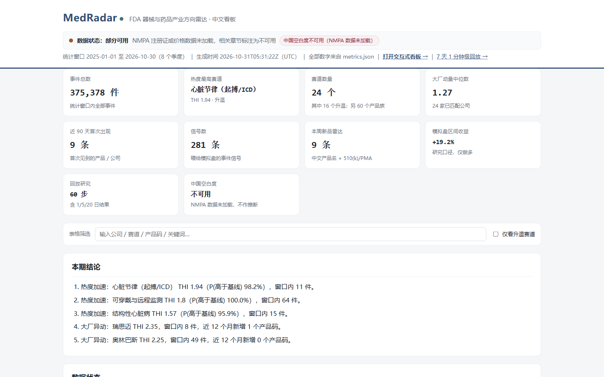
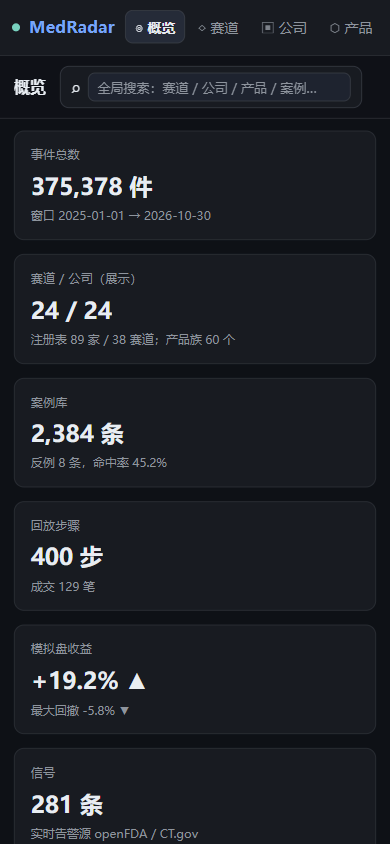

Explore
Generated artefacts, not a live service
Everything here was generated from the committed 2026-10-31 snapshot with package v0.5.0. Open the interactive pages, or read the machine-readable contract behind them.

medradar dashboard.
capture: docs/assets/screenshots/dashboard-desktop.png · 1440 × 900
Artefact index
Five artefacts, one contract.
All five are generated from the same metrics.json, so they cannot
disagree with each other by construction.
Dashboard
Single-page app with all data inlined: overview KPIs, track heat, company momentum, product families, cases, replay and the data audit. Works offline in a browser.
dashboard.htmlStatic report
The Chinese research report and the English one-pager as one self-contained page, with the data-status, heat, structural-migration, cases and method chapters.
report.htmlEvent replay
Step-by-step replay of the research window: what the store knew at each step, and what the simulated book did with it.
replay.htmlmetrics.json
The machine-readable data contract every artefact is rendered from. Change the definitions
in docs/SCHEMA.md before changing a metric.
Cases
The case-library definition and the extreme-return audit behind the selected and negative example cards in the dashboard.
docs/CASES.mdData audit
Generated counts, timestamps, freshness and database size for the snapshot behind every artefact on this page.
docs/DATA.mdResponsive artefact
The dashboard on a 390 px screen.
The same generated artefact, captured at mobile width. No separate mobile build exists, so this is the real layout, not a mock-up.

medradar report.
capture: docs/assets/screenshots/report-desktop.png · 1440 × 900

capture: docs/assets/screenshots/dashboard-mobile.png
Research figures
The same facts, drawn once.
Versioned SVG figures generated from the committed metrics, used on the research and platform pages.

source: docs/metrics.json → trading.event_study

source: docs/DATA.md

source: docs/DATA.md; docs/metrics.json
How to read these artefacts
- They are generated, not live. Each page was written by a command against the committed snapshot; nothing on this site is a live feed or a forecast.
- The snapshot is not committed.
data/is gitignored (1.3 GiB SQLite), so a clean clone reproduces the procedure and the formats, not the exact numbers. - Every figure carries its unit and window. Event-date windows are on the Platform page; return numbers stay in-sample and inherit the no-public-time caveat.
- Rebuild:
medradar dashboard,medradar report,medradar replay— all offline, all frommetrics.json.
source: README.md → The dashboard snapshot, Reproduce; docs/DATA.md